Myth of Technological Utopianism
My senior project at California College of the Arts tackled the question of whether the evolution of technology corresponds with our quest for utopia.
My senior project at California College of the Arts tackled the question of whether the evolution of technology corresponds with our quest for utopia.
While working for Katie Barcelona Design, I designed a responsive booking website for yök casa + cultura in Barcelona, Spain.
X Quarterly is a publication based around the theme of rejection. Every rejection I ever faced is what has made me the person that I am today, ranging from my personality, to my choice of career and the country I live in. Instead of fearing rejection, X embraces it, with each issue featuring a wide range of both rejects and rejectors of both humorous and intellectual quality.
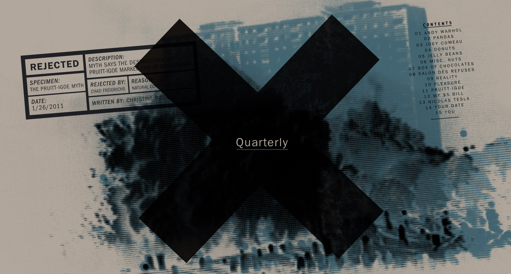 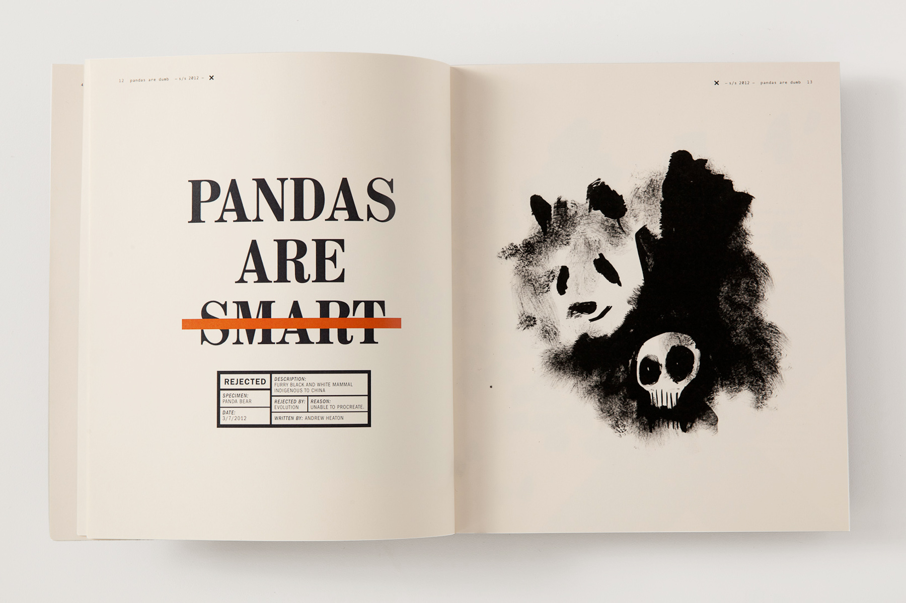 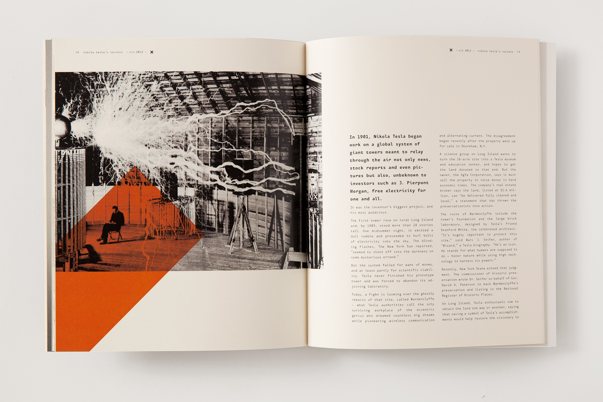Dorothy Parker’s Sharp Tongue is a malt whiskey inspired by 1920s Manhattan, in honor of whiskey-drinking women everywhere.
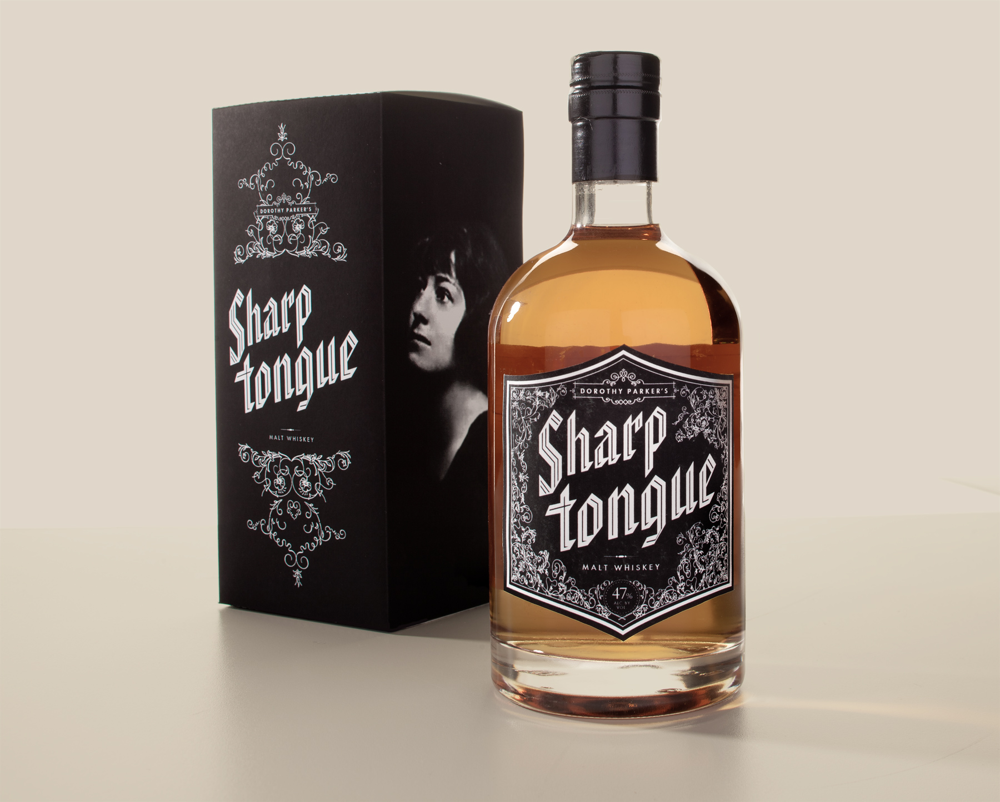 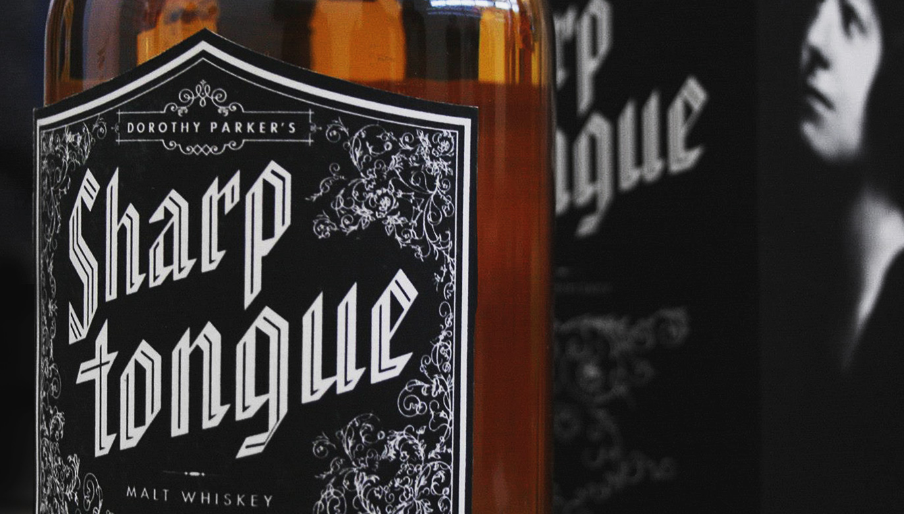A personal hero of mine, Dorothy Parker was an American writer and poet active during the 1920s-1930s. Parker was famous for her witty remarks and sharp observations, as well as her cynical poetry reflecting her attitude regarding love, alcohol and modern life. I can't think of a more suited person for a strong whiskey celebrating untraditional sides of femininity.
Frøya is a line of organic Norwegian fruit and berry products for the American market.
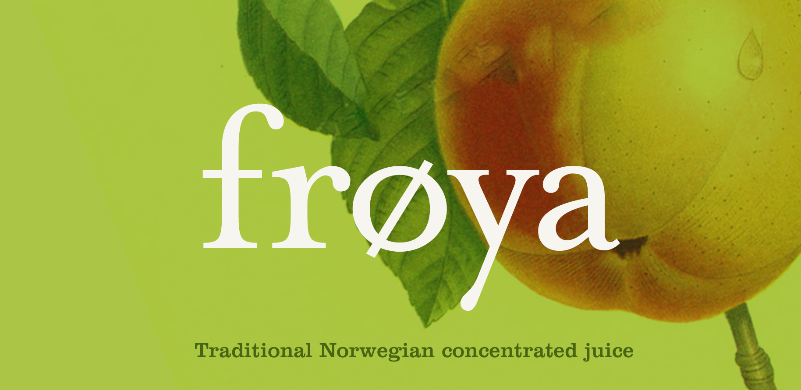The main product is a concentrated juice, known in Norway as saft and in other English-speaking countries as squash or cordial, in form of a light syrup thats mixed with water to create a light and refreshing juice drink. Despite the drinks popularity abroad, I've found it to be oddly missing from the shelves of American supermarkets, so I set out to design a product line that would convince Americans of its appeal.
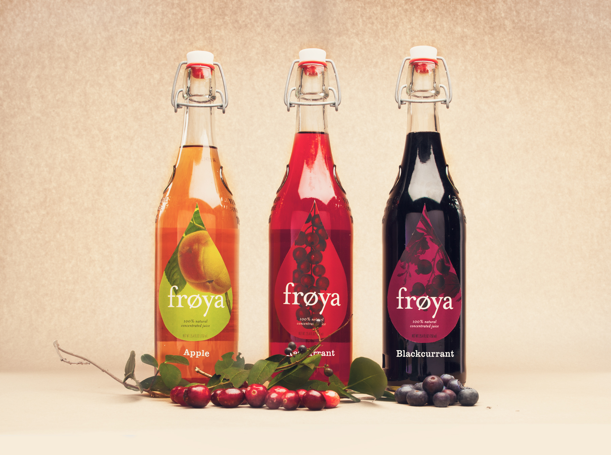Back in 2011, LiveJournal hired me to design a new logo and blog design for popular celebrity gossip blog, Oh No They Didn't.
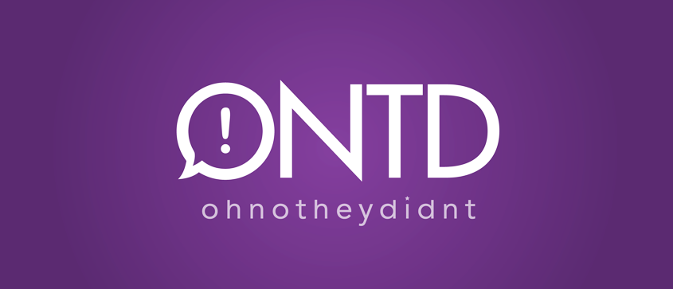 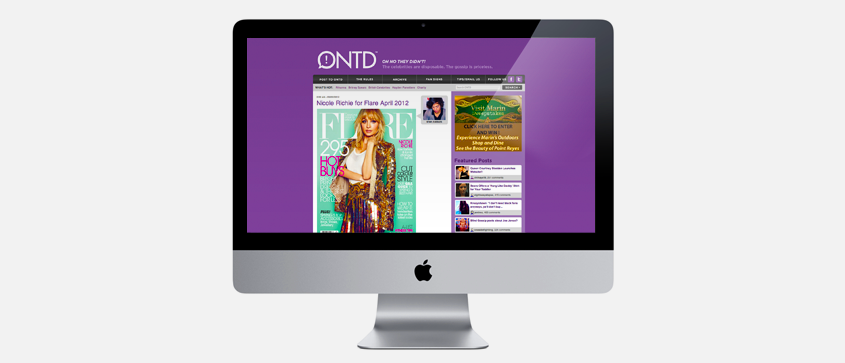Just a few projects that were particularly fun to work on.
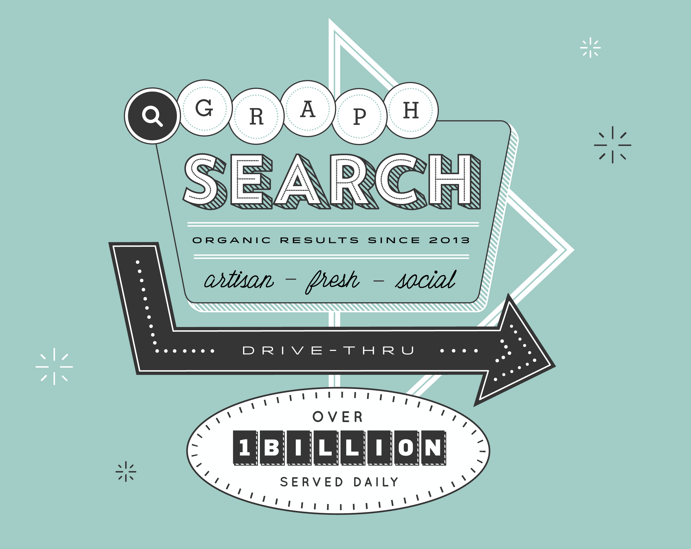T-shirt design to celebrate a milestone on the Facebook Search team.
Environmental design for Nightingale-Bamford School's fund raising night, building a typographical system from portraits of every student. AD/ Katie Barcelona.
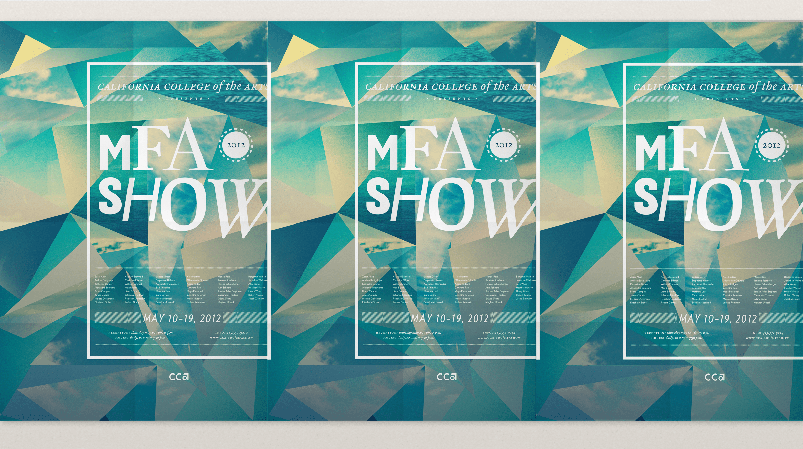Posters for the 2012 MFA Show at my alma matter.